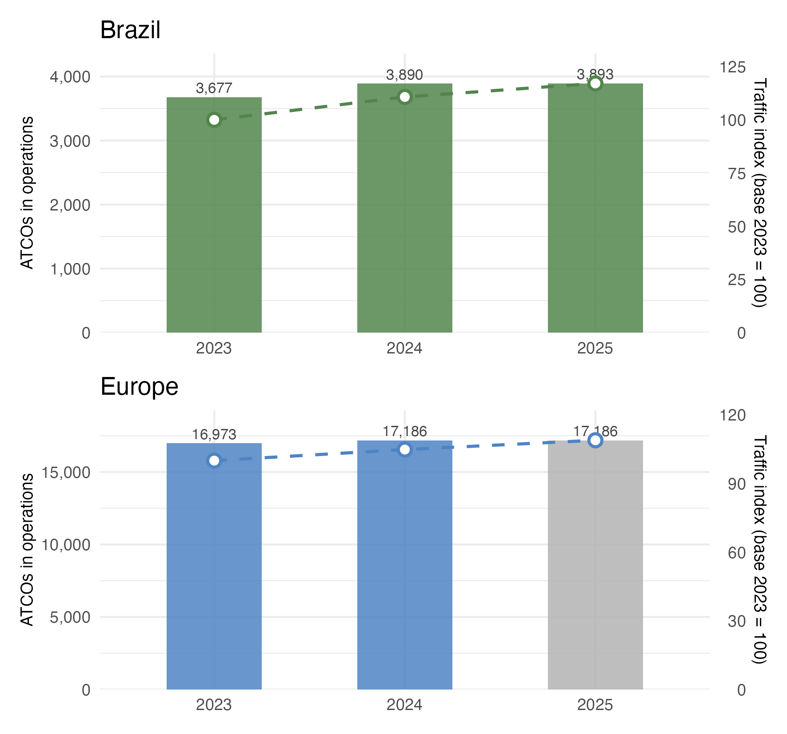
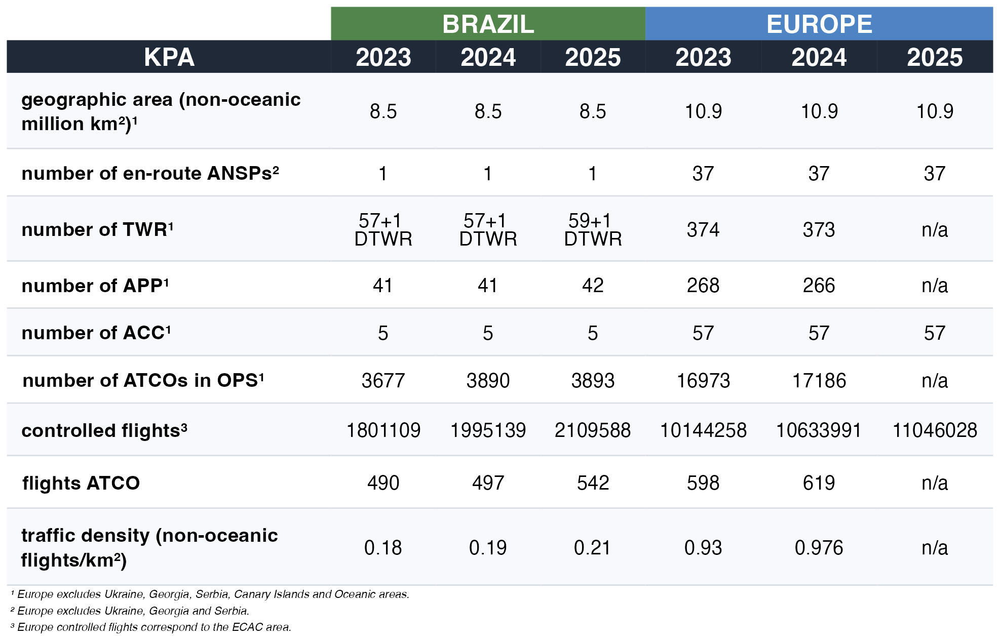
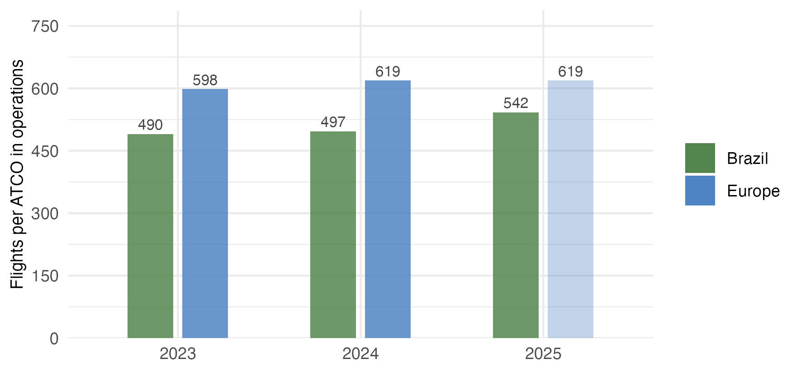

2 Air Navigation System Characterisation
This section presents key characteristics of the air navigation systems of Brazil and Europe. In broad strokes, the provision of air navigation services in both regions relies on similar operational concepts, procedures, and supporting technologies. Nonetheless, there are several distinctions between the two systems, which help to account for the similarities and differences in key performance indicators documented in this report.
2.2 High Level System Comparison
Table 2.1 summarises the key characteristics of the Brazilian and European air navigation systems for 2023, 2024, and 2025. The data reflects a period of consolidation and growth in both regions, albeit at different paces and driven by distinct structural factors.

In Brazil, the number of Air Traffic Controllers (ATCOs) in operations has continued to grow steadily, increasing from in 2024 to in 2025 — a rise of %. In Brazil, the number of Air Traffic Controllers (ATCOs) in operations remained broadly stable between 2024 and 2025, rising marginally from 3,890 to 3,893 — an increase of just 0.1%. Despite this near-plateau in workforce size, controlled traffic continued to grow over the same period, suggesting that productivity gains and operational efficiency improvements have played an increasingly important role in sustaining capacity. This trend reflects a broader strategic shift within DECEA, where investments in technological modernisation and process optimisation are enabling the existing controller workforce to handle a growing volume of flights, demonstrating that sustainable growth in air traffic management need not rely solely on workforce expansion.
In Europe, ATCO numbers showed only a mild variation over the period, moving from in 2023 to in 2024. This more conservative modulation reflects not only the slower pace of traffic recovery in the region but also a strategic orientation toward investment in technology, automation, and operational efficiency as levers to absorb demand. In Europe, there exists a mix of organisational models and labour contracts ranging from public service to fully commercial organisation, which tends to produce more measured responses to anticipated changes in air traffic demand. Figure 2.1 illustrates this divergence in workforce evolution alongside the traffic index for both regions.
The traffic density indicator — expressed as controlled flights per square kilometre of non-oceanic airspace — provides a structural lens through which the operational differences between both regions can be better understood. In 2025, Europe operated at a density of n/a flights/km², significantly higher than Brazil’s 0.21 flights/km². Despite this gap, Brazil’s density has grown consistently over the period, reflecting the continued expansion of domestic aviation. This contrast underpins many of the operational differences discussed throughout this report, particularly regarding coordination complexity, capacity constraints, and network organisation.
Beyond the absolute number of controllers, the ratio of controlled flights per ATCO in operations offers a complementary perspective on how each system organises its workforce relative to demand. Figure 2.2 shows that Europe consistently records a higher flights-per-ATCO ratio compared to Brazil. This difference reflects not only the traffic density gap between the two regions but also distinctions in airspace organisation, sector design, and the distribution of responsibilities across control units.

Both regions operate with similar operational concepts, procedures, and supporting technology. Considering the non-oceanic dimension of the airspace, Brazil services an area approximately 22% smaller than Europe. Brazil, with lower traffic density relative to its airspace, faces a more challenging cost-benefit ratio in maintaining communication coverage and surveillance for regions with low traffic volumes. The higher traffic density in Europe influences all aspects of flight management — in particular, the European region faces more considerable challenges in coordinating efforts to address operational constraints and service current demand. The contrast between one single en-route ANSP in Brazil and 37 in Europe is one of the most structurally significant differences between the two systems. This fragmentation is precisely the rationale behind the Network Manager’s coordinating role in Europe — ensuring that flow management decisions, route network design, and capacity planning are addressed collectively rather than in isolation. Brazil’s unified structure under DECEA allows for more centralised decision-making, which may offer advantages in terms of system-wide responsiveness, though it also places considerable institutional responsibility on a single entity
2.3 Regional Approach to Operational Performance Monitoring
The previous report detailed the historic setup of the performance monitoring systems in Brazil and Europe.
The implementation of the performance-based approach is not a fundamental new activity in Europe. The Performance Review Commission (PRC) was established within EUROCONTROL in 1998 aiming to establish and implement an independent European air traffic management (ATM) performance review capability in response to the European Civil Aviation Conference (ECAC) Institutional Strategy. The main goal of the PRC is to offer impartial advice on pan-European ATM performance to EUROCONTROL’s governing bodies. Supported by the Performance Review Unit (PRU), the PRC conducts extensive research, data analysis, and consultations to provide objective insights and recommendations. EUROCONTROL’s performance review system, a pioneering initiative in the late 1990s, has influenced broader forums like ICAO’s global performance approach and the Single European Sky (SES) performance scheme. Collaborating internationally, particularly with ICAO, the PRC aims to harmonise air navigation practices. The PRC produces annual reports, e.g. Performance Review Report (PRR) and ATM Cost-Efficiency (ACE), and provides operational performance monitoring through various data products and online tools (https://ansperformance.eu). Continuous efforts are made to expand the online reporting for stakeholders and ensure access to independent performance data for informed decision-making.
It is noteworthy to recall that DECEA, influenced by ICAO publications, embraced a performance-based approach, notably advancing the national state-of-the-art in collaboration with EUROCONTROL. Beginning with the SIRIUS Brazil Program in 2012, DECEA faced challenges defining metrics, but made significant progress after signing a Cooperation Agreement with EUROCONTROL in 2015. DECEA published crucial documents for ICAO’s Global Air Navigation Plan, prompting an organisational transformation and adaptation of practices. Establishing the ATM Performance Section in 2019, akin to EUROCONTROL’s PRU, DECEA accelerated the build-up of expertise in operational performance monitoring. This culminated in the publication of the first Brazilian ATM Performance Plan for 2022–2023. Building on this foundation, DECEA has continued to strengthen and broaden its performance management culture in recent years. This has been achieved through dedicated training courses on ATM performance, the organisation of an annual performance seminar bringing together national and international stakeholders, and successive updates to the national ATM Performance Plan. In parallel, DECEA has made significant technical advances in the calculation of new indicators that had not previously been assessed at the national level, most notably Vertical Flight Efficiency (VFE) and Horizontal Flight Efficiency (HFE). These additions represent a meaningful step forward in aligning Brazil’s performance monitoring framework with international best practices and expanding the analytical scope of the national system.
Actively fostering an open culture of knowledge-sharing within South America, DECEA has engaged in workshops and seminars, inviting EUROCONTROL for this collaborative effort. The recurrent use of common indicators and the close technical collaboration during joint analyses enrich not only both regions but also carry a broader global impact. Embracing transparency, both agencies have made their indicators and databases publicly accessible, perpetuating a culture of reciprocity for mutual advancement. The lessons learned from this collaboration are systematically shared with the multinational Performance Benchmarking Working Group (PBWG) and the Performance Expert Group of the ICAO GANP Study Group, responsible for developing GANP Key Performance Indicators (KPIs) — reinforcing this collaboration as a reference model for ANS performance management globally. Updated dashboards, previous work, and supporting historical data are available at https://ansperformance.eu/global/brazil/ or https://performance.decea.mil.br/.
2.4 Summary
The characteristics of the air navigation systems in Brazil and Europe presented in this chapter highlight both the commonalities and the structural differences that shape operational performance in each region. Both systems rely on similar operational concepts, procedures, and supporting technology, yet they differ significantly in their organisational models, workforce dynamics, and traffic density. In 2025, Brazil continued to expand its aviation sector, with a controller workforce that remained broadly stable while managed to support sustained traffic growth — reflecting efficiency gains and operational improvements rather than workforce expansion alone. Europe, in turn, consolidated its network with a more measured approach to capacity building. The traffic density gap — with Europe operating at approximately four times the density of Brazil — remains a key structural difference that helps explain many of the performance variations documented throughout this report. At the institutional level, both DECEA and EUROCONTROL have continued to strengthen their performance monitoring frameworks, with Brazil advancing the calculation of new efficiency indicators such as Vertical Flight Efficiency (VFE) and Horizontal Flight Efficiency (HFE) and building its performance culture through training and annual seminars. Together, these developments reinforce the value of the bilateral collaboration and set the foundation for the traffic and performance analysis presented in the following chapters.